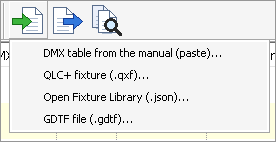
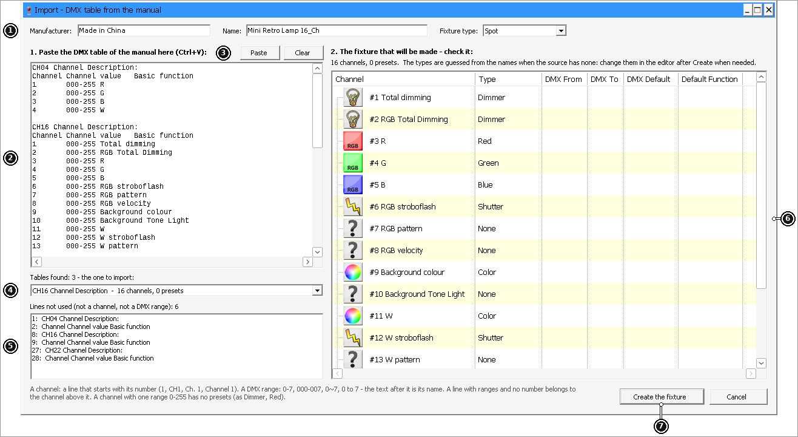
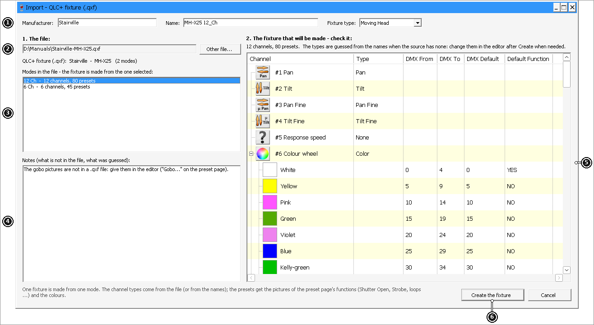
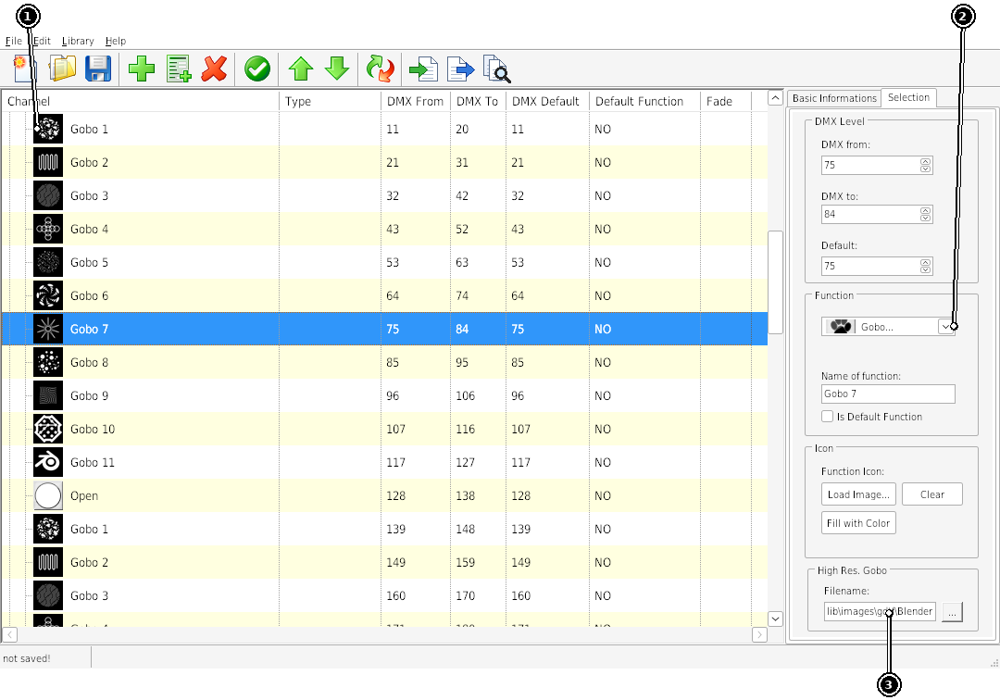

For: Full
A profile can be made from what the maker of the fixture gives, instead of typing every channel:

| Import | From |
|---|---|
| DMX table from the manual (paste)... | the DMX table of the manual (PDF, web page, text), copied and pasted |
| QLC+ fixture (.qxf)... | a fixture file of QLC+ |
| Open Fixture Library (.json)... | a fixture of the Open Fixture Library (open-fixture-library.org) |
| GDTF file (.gdtf)... | a GDTF file (gdtf-share.com, or the maker's site) |
The list opens from the toolbar's Import button and from File > Import.
A .qxf, .json or .gdtf file can also be dropped on the editor's window.
In each case a window shows the fixture that will be made, before anything is changed. Create the fixture puts it in the editor as a new profile, not saved yet: check it, correct what is needed, run Test and save it.

A manual with three DMX modes pasted; the 16 channel mode is the one imported.
| 1 | Manufacturer, Name, Fixture type - of the profile that will be made. The name proposed is the model and the number of channels. |
| 2 | The text of the manual. Paste it here (Ctrl+V); it can also be typed or corrected here: the right side follows every change. |
| 3 | Paste puts in what is in the clipboard, Clear empties the box. |
| 4 | Tables found - a manual often has one table for each DMX mode. Choose the one to import; the channels count again from 1 in each table. |
| 5 | Lines not used - the lines that are neither a channel nor a DMX range, with their line numbers, so you can see that nothing was missed. |
| 6 | The fixture that will be made: the channels, the types and the presets. |
| 7 | Create the fixture. |
1, CH1, Ch. 1,
Channel 1, Kanal 1, #1. The text after the number is the name of the channel.
Lines such as CH16 Channel Description or 16 channel mode are titles: they start a new
table.0-7, 000-007, 0~7, 0 - 7,
0 to 7 or 0..7; the text after it is the name of the preset. A line with ranges and no
channel number belongs to the channel above it. Values with a unit (0-100%, 0-540°,
0-20Hz) are not ranges.540°) becomes Max Pan /
Max Tilt.
A QLC+ file with two modes; the 12 channel mode is selected.
| 1 | Manufacturer, Name, Fixture type - from the file; they can be changed. |
| 2 | The file; Other file... opens another one. |
| 3 | The modes of the file: the profile is made from the one selected (one profile for each mode; import the file again for another mode). |
| 4 | Notes - what the file does not have and what was guessed. |
| 5 | The fixture that will be made. |
| 6 | Create the fixture. |
The Open Fixture Library and GDTF windows are the same. From the files come the channels and their types, the fine channels, the presets with their names and colours, the beam angle and the pan and tilt angles. Fixtures with many pixels (LED bars, matrices) are made channel by channel.
A GDTF file carries the pictures of its gobo wheels. The editor takes them: every gobo preset gets its picture and its gobo file, as Gobo... on the preset's page would give it.

A fixture made from a GDTF file: the gobo wheel with its pictures.
| 1 | The picture of each gobo (32 x 32), on black: white is where the light goes through. |
| 2 | The function is Gobo..., the name comes from the file
(Gobo 7). |
| 3 | High Res. Gobo: the full picture, saved as a .png in
lib\images\gdtf\<manufacturer name>\ of the LumiDMX folder. The 3D shows the gobo from this
file. |
lib\images; otherwise the folder the 3D
next to it takes its data from. When neither has lib\images, the pictures go to
gdtf_gobos next to the editor and the Notes say that the 3D will not see them there.Important: always check the types in the list after Create the fixture. QLC+ and Open Fixture Library files have no gobo pictures: give them in the editor (Gobo... on the preset's page, see Fixture information and pictures).